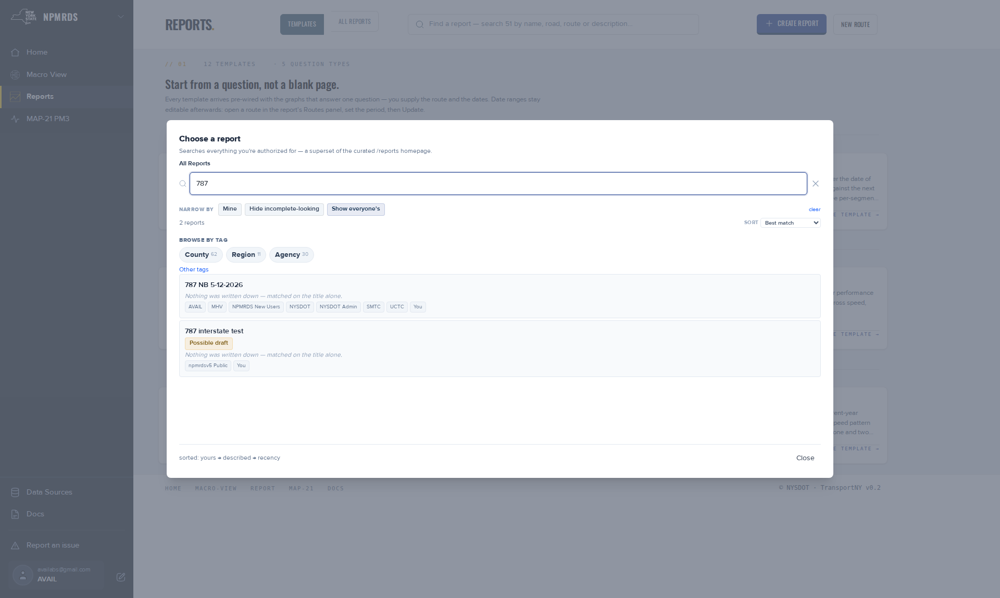

Find a report.
Two ways in: the search dialog opened from the Reports header, and the All reports list. Both search names and descriptions, browse by county, region and agency tags, and rank your own reports first. Reading a report needs no account.
Before you start
Open Reports. Only reports that exist as pages are listed. The earlier tool's library of 869 reports is not searchable here; at the August 2026 reading 32 of them had been rebuilt as pages, and reports made since then are pages from the start. Signing in adds two things: your reports rank first and carry a Mine badge, and the default view narrows to reports you or your agency own.
Steps
- Select the search bar, Find a report — search N by name, road, route or description….The Choose a report dialog opens on All Reports with a search box, a Browse by tag row and a ranked list.
- Type at least 2 characters in Search by name or description….Rows show the name, badges (Mine, Possible draft), the description, and tag chips. A report with no description reads Nothing was written down — matched on the title alone.
- Or browse. Select County, Region or Agency, then a value.The breadcrumb reads All Reports / Agency / NYSDOT, for example. Other tags takes a free-text tag such as a project number.
- Narrow with the chips beside narrow by: Mine, Hide incomplete-looking, Show everyone's.The count line reads "N reports". clear resets the first two.
- Change the order with sort: Best match, Recently updated or Name (A–Z).
- Select a row.The dialog closes and the report opens.
- To search from a link, add
?search=and a term to the Reports address.The bar shows the term and N matches · show results; selecting it opens the dialog on those results. - For the full list, select All reports in the header toggle, or open
/reports/list.A page with a search box, a filter rail and a table. Columns: Report, Tags, Routes · graphs, Updated. Select a row to open the report.

Public and mine
Every report page is public to read. What the pickers list by default depends on who you are. Signed out, the list is the whole catalogue. Signed in, it narrows to reports you created, reports tagged with your user or agency tags, and the shared templates; Show everyone's widens it back. For agency users the restricted view is the default; the wider view is the default only for the platform's own staff accounts. Mine is stricter: only reports you created. Ownership is read from your account on your side; it is a convenience, not a permission.
Settings
Every control in the dialog and on the list page.
| Control | What it does | Values | Default |
|---|---|---|---|
| Search by name or description… | Filters by name or description; also the list page's search box | Text, 2 characters or more | Empty |
| Browse by tag | Drills into a tag category, then a value | County (62) · Region (11) · Agency (30) · Other tags | None |
| narrow by chips | Ownership and quality filters | Mine · Hide incomplete-looking · Show everyone's | See above |
| sort | Orders the results | Best match · Recently updated · Name (A–Z) | Best match: yours, then described, then recent |
| Row | Opens the report | — | — |
| List page rail | The same facets and tag tree as the dialog, kept open beside the table | — | |
| List page table | One row per report | Report · Tags · Routes · graphs · Updated; pages of 25 | — |
Limits and gotchas
- One typed character does nothing; two start the search.
- Best match is a score, not a date: your own reports, then reports with a description, then recent ones. A name containing test, testing, delete, bug or saving is pushed down and badged Possible draft; Hide incomplete-looking drops those rows.
- A report whose page was deleted is dropped from results even if the catalogue still lists it, so the dialog can show slightly fewer than the count in the search bar.
- Only Agency tags are set automatically on rebuilt reports. County and region tags appear only where an author added them.
Troubleshooting
I cannot find my report
Select Mine. If its name contains a word like test, turn off Hide incomplete-looking. If a colleague made it, browse by their agency or select Show everyone's.
I was asked to sign in to view a report
Reports are public to read. A sign-in prompt on a plain report address was reported against the earlier tool in May 2026. If it happens on the current pages, report it with the address.
The report opened but shows no graphs
It is a template. It needs a route from you first; see Start a report from a template.
What next
- Start a report from a template
- Share, print and publish a report
- Find, edit, tag and share routes · the same tag vocabulary, for routes
- Build and edit a report
References
- Report picker code (ReportPickerModal, reportScore, useReportSearch, pickerScoring, 2026-09-03): title Choose a report, breadcrumb, placeholders, facet chips, sort options, badges, the empty-description line, the 2-character minimum, the score weights, the deleted-page check, the visibility allow-list and its default.
- Search trigger code (ChooseReportButton, 2026-09-02): resting prompt, live count, N matches · show results.
- Live All Reports page (published 2026-09-04): search filter placeholder Search by name or description…; table columns Report · Tags · Routes · graphs · Updated; a rail section whose labels are not in the repository read for this page.
- All-reports design (2026-09-02): rail facets, tag tree counts, pages of 25.
- NPMRDS design digest: 869 legacy reports, 32 rebuilt (August 2026).
- Running fix 2173158 (2026-05-27): "Cannot view reports without logging in".